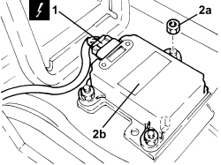

3350E30 LATERAL ACCELERATION AND SLEWING SENSOR - R.R
- Path
- Procedures > 33 BRAKES > 3350 TRACTION CONTROL > 3350E VEHICLE DIRECTION CONTROL SYSTEM VDC/ESP > 3350E30 LATERAL ACCELERATION AND SLEWING SENSOR - R.R
- Kind
- repair procedure (removal / refitting; the operation number is the code)
- Applies to
- all engines; all production periods
- Interactive page
- https://sloeber94.github.io/elrnDB/alfa/159/en/#/939010807
Applies to: all engines; all production periods
 Removing
Removing
 Refitting
Refitting- Make sure that the ignition key is in the OFF position, then disconnect the battery terminal (-).
Op. 7045A10 FRONT SEAT (ONE), LEFT OR RIGHT - R.R.
Op. 7040L71 BOX ON TUNNEL REAR COATING - R R
Op. 5010C32 AIR VENT ON TUNNEL COVER FOR REAR SEATS - R.R.
Op. 7040L37 GEAR LEVER TRIM - R.R
Op. 3380A44 HANDBRAKE/LINKAGE PROTECTION - R+R
Op. 7040L20 TUNNEL COVER - R.R
1. Disconnect the electrical connection from the lateral acceleration and yaw sensor.
2. Unscrew nuts (2a) and remove the lateral acceleration and yaw sensor (2b).

Applies to: all engines; all production periods
Refitting
Removing- Refit the lateral acceleration and yaw sensor and secure with nuts.
- Connect the electrical connection to the lateral acceleration and yaw sensor.
Op. 7040L20 TUNNEL COVER - R.R
Op. 3380A44 HANDBRAKE/LINKAGE PROTECTION - R+R
Op. 7040L37 GEAR LEVER TRIM - R.R
Op. 5010C32 AIR VENT ON TUNNEL COVER FOR REAR SEATS - R.R.
Op. 7040L71 BOX ON TUNNEL REAR COATING - R R
Op. 7045A10 FRONT SEAT (ONE), LEFT OR RIGHT - R.R.
- Connect the negative battery terminal.
- Calibrate the lateral acceleration and yaw sensor following the procedure indicated by the Examiner diagnostic station.
Topics linked from this page (6)
- 3380A44 HANDBRAKE/LINKAGE PROTECTION - R+R
- 5010C32 AIR VENT ON TUNNEL COVER FOR REAR SEATS - R.R.
- 7040L20 TUNNEL COVER - R.R
- 7040L37 GEAR LEVER TRIM - R.R
- 7040L71 BOX ON TUNNEL REAR COATING - R R
- 7045A10 FRONT SEAT (ONE), LEFT OR RIGHT - R.R.